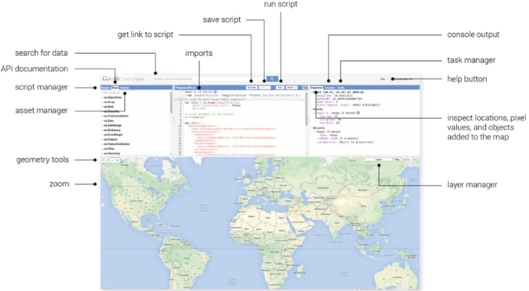
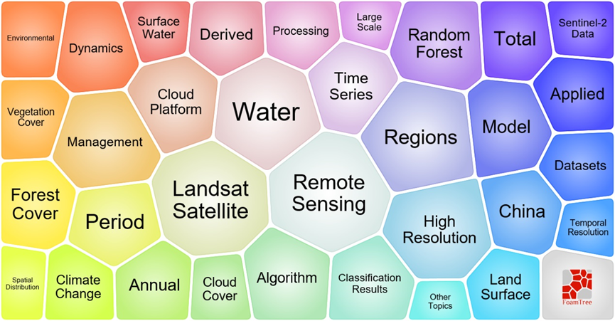
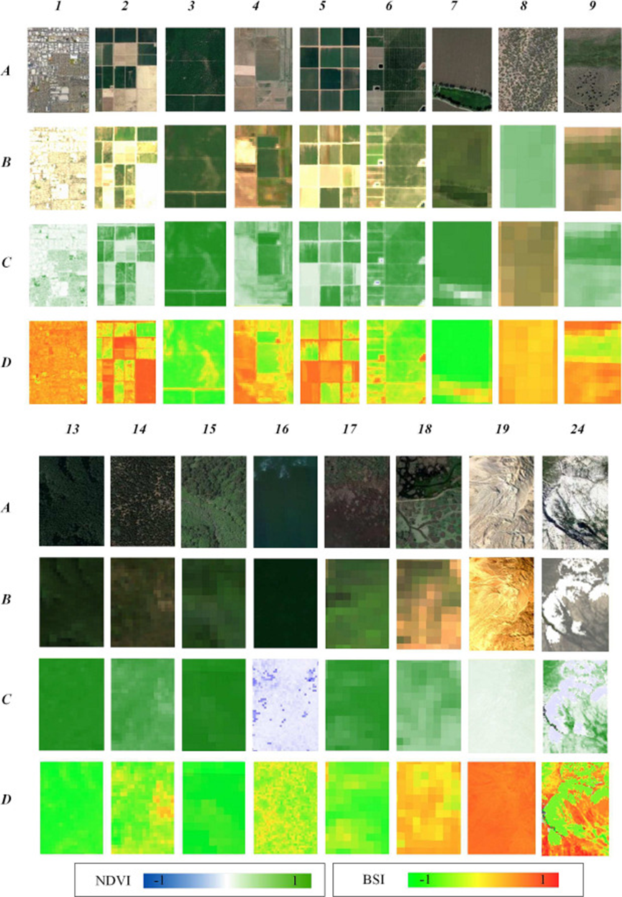

Week 5 - Google Earth Engine
5.1 Summary
Definition of Google Earth Engine
Google Earth Engine (GEE) is a cloud-based platform specialized in Earth-scale geospatial analysis.
Store massive datasets on servers, at very fast speeds, by writing your own code and applying it.
GEE’s basic datatypes amount to a secondary encapsulation of JavaScript datatypes by Google, with some custom methods added for ease of use.
Code that runs both client-side and server-side.
Importance of Google Earth Engine
GEE leverages Google’s cloud computing resources to provide fast data processing capabilities, making it an ideal platform for performing complex geo-spatial analysis and image processing tasks and supporting the operation of complex algorithms and models.
There is no need to load the full image multiple times during the loop.
It is free, which makes it easy for academic research, education, and non-profit programs to use the platform.
Some details about Google Earth Engine

Google Earth Engine Code Editor interface (Source: Google Earth Engine)
Image scale = pixel resolution, which is actually determined by the output, not the input.
All displayed data are converted to Mercator projection (EPSG: 3857).
The object types: vectors, rasters, elements, strings and numbers, all belong to a specific category. Each category has a GEE function or method that corresponds to it.
Raster data = lots of images
Feature = geometry with attributes
Feature collection = several features with attributes
Collection = several images or polygons
Geometry = point/line/polygon with no attributes
Google Earth Engine functions and tools
Loading image collections
Importing, organizing, filtering and processing image data
Reducing images
Reducing images by region
Reducing images by neighbourhood
Regression.
Linear regression
Multivariate multiple linear regression
Joins and filtering
Join image collections
Join feature collections
Spatial join
Intersect
Spatially subset
5.2 Application
There are many keywords in Google Earth Engine (GEE), but the most revolve around Landsat Satellite, Remote Sensing, Water, Regions (Yu and Zhao, 2021). Currently, Google Earth Engine is being used in research for mining, storing, retrieving, and processing spatial data for a variety of applications designed for a wide range of areas, such as vegetation monitoring, farmland mapping, ecosystem assessment, etc (Kumar and Mutanga, 2019).

Keywords related to GEE（Yu and Zhao, 2021）
When I looked up the relevant literature of Google Earth Engine, many of the literature obtained Landsat images or Sentinel images from the Google Earth Engine (GEE) database and used some machine learning methods to study the issues related to land use and land cover (LULC). Ganjirad and Bagheri (2024) made and updated land use and land cover maps by analyzing Landsat 8 image data on the cloud computing platform of Google Earth Engine. In this way, environmental natural resources and land changes can be monitored in real time, and problems such as deforestation, water pollution, and urban expansion can be detected in time, so that rapid response and protection measures can be taken.

Exemplary image patches collected over the study region from different LULC classes. A) The high-resolution patches derived from Google Earth Pro. B) The corresponding Landsat 8 image patches. C, D) The corresponding raster representations of NDVI and BSI indices(Ganjirad and Bagheri, 2024).
Second, Feng et al. (2022) utilized the GEE platform to classify ecosystem types in the Yellow River Basin region of the Upper Tibetan Plateau with high accuracy by combining Sentinel-2 satellite images and machine-learning Random Forest Classification method. This study provides a rich resource for humans to understand the changes of ecosystems in the Yellow River Basin region of the upper Tibetan Plateau.
5.3 Reflection
I had a lot of fun operating the Google Earth engine in my practical class this week. I have never been exposed to it before, so trying something new makes me feel very happy. I found the analytics tool to be really powerful, being able to store such a large amount of data. It’s mostly based on a JavaScript API, which can be a bit difficult for me, and it’s going to take me some time to learn this programming language. I used it to look at geographic images of some of the countries I was interested in by writing scripts. But it was a bit difficult for me to retrieve, filter and process the data efficiently. I also realized that it was very different from the GIS software I had learned before, in that the data was processed on a server rather than on a local machine. How it is processed is what I want to find out next. In the future, I would also like to understand some advanced features in GEE and learn how to write efficiently, it may help me a lot in my future participation in some projects! And it’s still free, which is a reason to want to keep learning about it.
5.4 References
Feng, S. Y., Li, W. L., Xu, J., Liang, T. G., Ma, X. L., Wang, W. Y. and Yu, H. Y. (2022) ‘Land Use/Land Cover Mapping Based on GEE for the Monitoring of Changes in Ecosystem Types in the Upper Yellow River Basin over the Tibetan Plateau’, Remote Sensing, 14(21), 5361.
Ganjirad, M. and Bagheri, H. (2024) ‘Google Earth Engine-based mapping of land use and land cover for weather forecast models using Landsat 8 imagery’, Ecological Informatics, 80, 102498.
Kumar, L. and Mutanga, O. (2019) ‘Google Earth Engine Applications’, Remote Sensing.
Yu, L. and Zhao, Q. (2021) ‘Application of Google Earth Engine’, Available at: https://encyclopedia.pub/entry/14783 (Accessed: 27 February 2024).